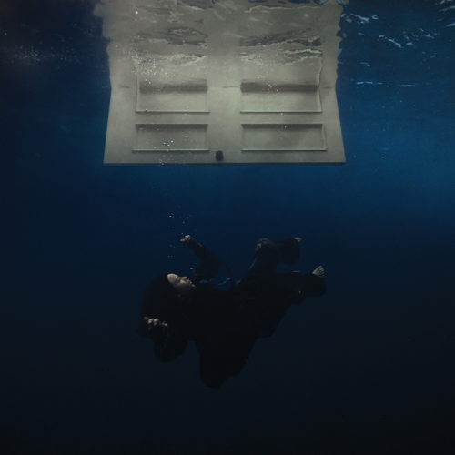
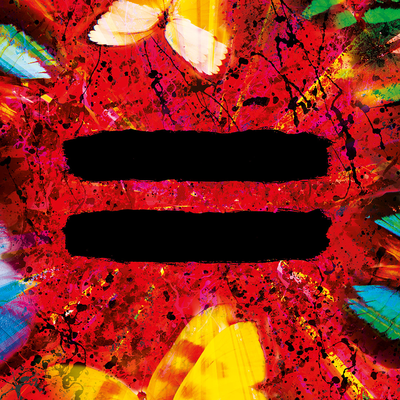

Notícias
Tyler the creator lança novo álbum "DON'T TAP THE GLASS"
Tyler, The Creator, um dos artistas mais inovadores da cena musical atual, acaba de lançar seu novo álbum "DON’T TAP THE GLASS". Este trabalho reflete sua evolução artística, misturando hip-hop experimental com influências de jazz e soul. Com letras profundas e um som único, o álbum promete ser mais uma obra-prima na carreira do rapper e produtor...
Show em Copacabana: veja detalhes
O show de Lady Gaga em Copacabana foi, sem dúvida, um dos maiores eventos musicais do ano no Brasil. Realizado em um cenário icônico, a praia de Copacabana se transformou no palco perfeito para uma noite de pura magia e emoção. Lady Gaga trouxe toda a sua energia, apresentando canções do seu mais recente álbum, além de grandes sucessos que marcaram sua carreira...

Kendrick Lamar e SZA anunciam a "The Grand National Tour"
Kendrick Lamar e SZA estão prestes a embarcar na tão esperada "The Grand National Tour", uma turnê conjunta que promete ser uma das maiores do ano. Com o sucesso de "DAMN" de Lamar e "CTRL" de SZA, os dois artistas se uniram para trazer o melhor do rap, R&B e hip-hop para palcos ao redor do mundo. A turnê promete uma fusão única de performances...
Novos Lançamentos
Billie Eilish - Hit Me Hard And Soft
Billie Eilish retorna com seu tão esperado novo álbum "Hit Me Hard And Soft". Com sua voz inconfundível e uma estética sombria, Billie mistura elementos de pop, eletrônica e indie para criar um álbum que explora o emocional e o introspectivo. Com faixas que vão do delicado ao explosivo, o álbum promete ser uma jornada musical profunda, abordando temas de amor, perda e a busca por identidade. Os fãs podem esperar mais uma obra de arte sonora que define a jovem artista como uma das mais ousadas de sua geração.

The Weeknd - After Hours
The Weeknd volta ao palco com seu mais recente álbum, "After Hours", uma mistura de R&B, pop e synthwave. O álbum explora temas de solidão, amor e autossabotagem, enquanto Abel Makkonen Tesfaye, o artista por trás do nome, entrega uma performance vocal impressionante e uma produção impecável. Os fãs da música de The Weeknd terão mais uma oportunidade de se perder no som inovador e nas letras que tocam no fundo da alma.
Ed Sheeran - = (Equal)
O aclamado cantor e compositor Ed Sheeran traz seu mais novo álbum "= (Equal)", que promete marcar a evolução do artista. Com faixas que misturam baladas românticas, pop acústico e influências do folk, o álbum conta com uma abordagem mais pessoal e madura, onde Sheeran explora temas de crescimento, paternidade e os altos e baixos da vida. Com sua habilidade inconfundível para criar hits e letras profundas, este álbum é um reflexo da jornada pessoal e musical de Ed.